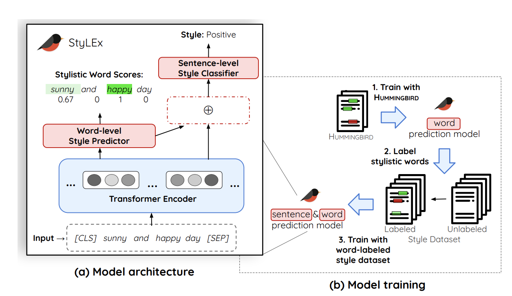

TrustME
Fall 2024 CSCI 5541 NLP: Class Project - University of Minnesota
Phish and Chips
Ronit Motwani
Jundong Zhang
Jeremiah Johnson
Ronit Motwani
Jundong Zhang
Jeremiah Johnson
Existing models for trustworthiness detection often rely on textual cues but lack a robust mechanism for assessing factual accuracy, leading to potentially false-positive classifications of deceptive messages. To address this, we introduce TrustME, a language model that utilizes a two-stage process to identify and evaluate message trustworthiness. In the first stage, TrustME uses RoBERTa for binary malicious classification, while the second stage integrates contextual and sentiment analysis with knowledge-based verification through ConceptNet, enhancing fact-checking capabilities. Our experiments aim to show that TrustME effectively balances detection accuracy with interpretability, providing fact-grounded, human-comprehensible explanations, and improving the reliability of trustworthiness assessments on both known and novel data sources.
A figure that conveys the main idea behind the project or the main application being addressed. This figure is from StyLEx.

If you need to explain more about your figure
What did you try to do? What problem did you try to solve? Articulate your objectives using absolutely no jargon.
We aimed to create a tool that helps determine if a message, like an email or text, is trustworthy or not. This tool works by analyzing both the content and the context of the message to judge whether it contains misleading or harmful information. Our main goal was to provide a reliable way to identify messages that might be attempting to trick or deceive people, especially in cases where traditional methods might fail to catch more sophisticated, subtle attempts. With this tool, we hope to make communication safer by allowing people to recognize and avoid potentially untrustworthy messages.
How is it done today, and what are the limits of current practice?
Today, message screening relies largely on filters that detect known malicious phrases or patterns, such as keywords common in spam or phishing attempts. These systems can catch obvious threats but often miss more subtle or new types of deceptive messages that use clever wording or manipulation to avoid detection. Additionally, current methods rarely consider the broader context or factual accuracy of a message, focusing instead on surface-level cues. This approach can lead to errors, like marking safe messages as dangerous or, worse, allowing harmful ones to slip through. These limitations reveal a gap in the reliability and adaptability of traditional message screening tools, especially against evolving digital threats.
Who cares? If you are successful, what difference will it make?
If successful, this tool could significantly impact digital communication security by helping both individuals and organizations better identify untrustworthy messages, reducing the risk of falling victim to scams or misinformation. For businesses, it could mean enhanced security for sensitive information, while for individual users, it could provide an added layer of protection and peace of mind in their everyday communications. This advancement would foster safer online interactions, build user trust in digital communication channels, and reduce the broader social and financial impacts of online fraud and misinformation.
What did you do exactly? How did you solve the problem? Why did you think it would be successful? Is anything new in your approach?
We developed TrustME, a model designed to assess the trustworthiness of digital messages by combining initial filtering with deeper content analysis. To tackle the problem, we built a two-stage process: first, we trained TrustME on a phishing detection dataset of around 5,000 samples from Hugging Face to classify messages as either potentially harmful or benign. In this stage, we fine-tuned a RoBERTa model to detect known patterns in phishing content effectively. Next, we incorporated a second stage where non-harmful messages underwent context and knowledge-based verification using ConceptNet, allowing the model to assess factual accuracy and contextual relevance. This two-layered approach is new in its balance of simple detection with complex verification, and we believed it would be successful because it integrates surface-level cues with fact-checking to better catch subtle, nuanced attempts at deception that other models often miss.
What problems did you anticipate? What problems did you encounter? Did the very first thing you tried work?
Sed ut perspiciatis unde omnis iste natus error sit voluptatem accusantium doloremque laudantium, totam rem aperiam, eaque ipsa quae ab illo inventore veritatis et quasi architecto beatae vitae dicta sunt explicabo.
How did you measure success? What experiments were used? What were the results, both quantitative and qualitative? Did you succeed? Did you fail? Why?
Nemo enim ipsam voluptatem quia voluptas sit aspernatur aut odit aut fugit, sed quia consequuntur magni dolores eos qui ratione voluptatem sequi nesciunt.
| Experiment | 1 | 2 | 3 |
|---|---|---|---|
| Sentence | Example 1 | Example 2 | Example 3 |
| Errors | error A, error B, error C | error C | error B |

How easily are your results able to be reproduced by others? Did your dataset or annotation affect other people's choice of research or development projects to undertake? Does your work have potential harm or risk to our society? What kinds? If so, how can you address them? What limitations does your model have? How can you extend your work for future research?